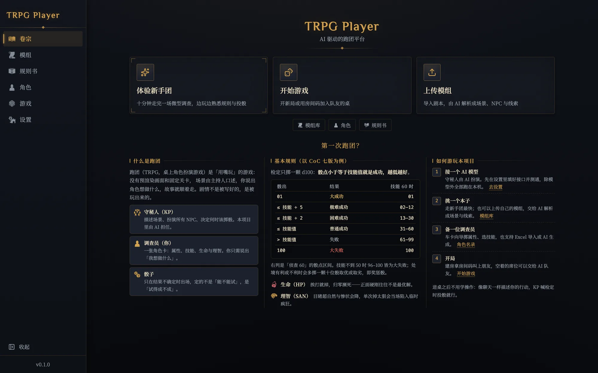
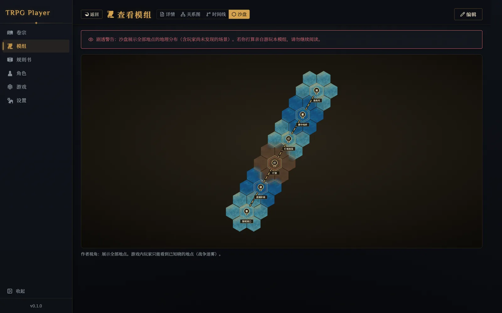
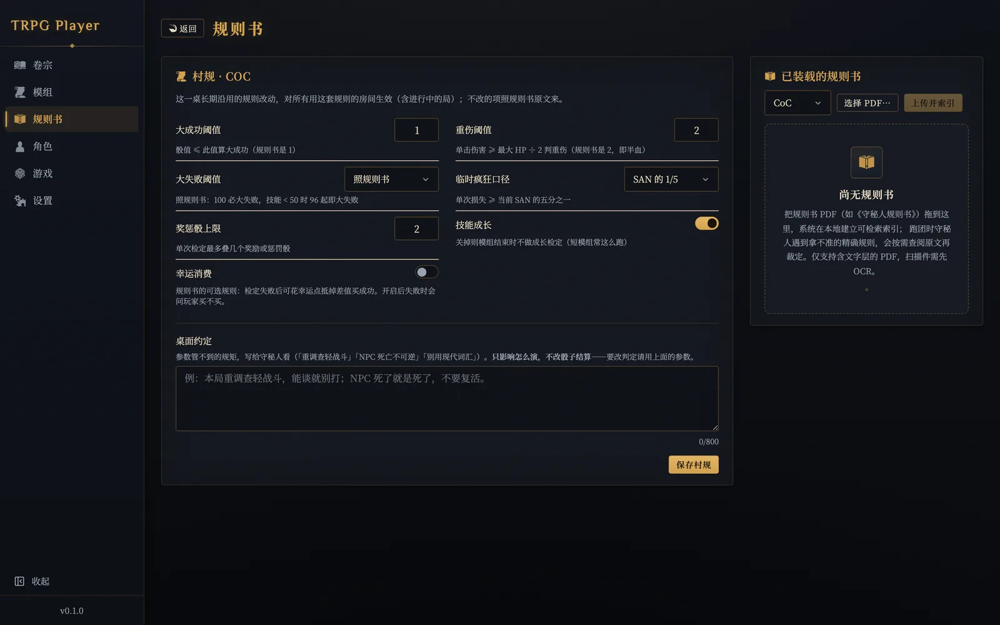
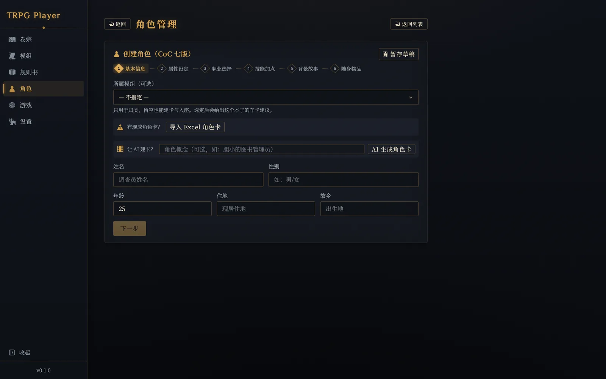
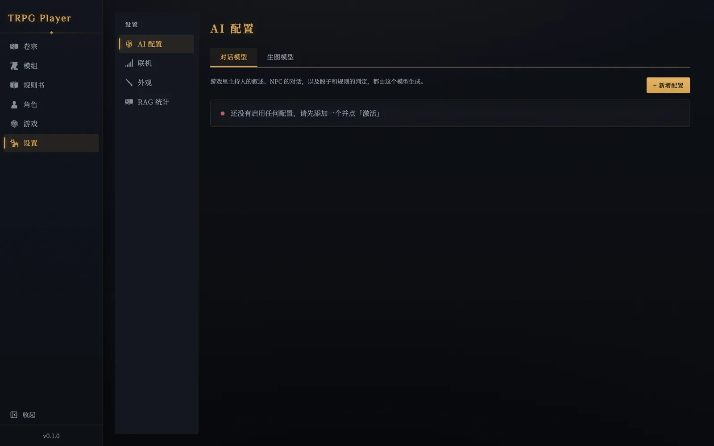

TRPG Player
AI 当守秘人的本地跑团桌面应用
AI 担任守秘人（KP）和所有 NPC，你一个人也能随时开一场团； 也可以在可信局域网里叫上朋友，空着的席位交给 AI 队友。 模组、角色卡和游戏记录都存在你自己的机器上。
装好还不能直接玩：你需要自备一个 AI 模型接口（OpenAI 兼容协议或 Anthropic 协议）， 在应用的「设置 → AI 配置」里填好并测通。本项目不提供模型服务，也不代收费用。

首页。第一次跑团的人可以直接从「体验新手团」进入原创示例短团《雾港失灯事件》。
Before you download
下载前先看这四件事
这不是一个装上就能玩的成品游戏，而是一个需要你自己接模型、自己准备本子的工具。 下面几条如果有一条不能接受，先别下。
要自备 AI 模型接口
支持 OpenAI 兼容协议与 Anthropic 协议，模型、接口地址和上下文窗口都可以自己配。
密钥只存在本机的 ai_settings.json，不会上传到任何地方。模型调用产生的费用由你和模型服务商结算。
安装包没有做代码签名和公证
所以首次打开会被系统拦。macOS：在应用上右键 → 打开，再确认一次即可； Windows：SmartScreen 弹窗里点「更多信息」→「仍要运行」。 介意这一点的话，可以按仓库文档自己从源码构建。
只适用于本机和可信网络
后端默认只监听回环地址，同一网络的其他设备也连不上；要让朋友加入，需要房主在「设置 → 联机」 里显式打开并重启应用。本项目没有账号体系，也没有传输加密， 请不要把它暴露到公网或做端口转发。
规则书和模组要你自己准备
安装包里只随附项目原创的示例短团。你自己的规则书 PDF、模组和角色卡由你导入， 版权与授权也由你自己负责 —— 详见 内容与素材声明。
What it does
能做什么
目前规则引擎只做了 CoC 七版。下面这些都是已经能跑起来的功能。
AI 主持与 NPC
AI 描述场景、扮演所有 NPC、决定何时该掷骰。叙述按 token 流式推送，长局会滚动生成剧情摘要，上下文有预算控制。
骰子不交给模型猜
检定、理智、战斗、追逐都由确定性规则引擎结算，AI 只负责「要不要检定、多难」这类语义裁量。3D 骰子按预定结果真投。
模组导入与 AI 解析
支持文本、PDF、Word 和常见图片格式（图片需视觉模型）。AI 把本子拆成场景、NPC、线索和时间线，还能生成六边形沙盘。
车卡与角色管理
CoC 七版车卡向导：掷骰或自定义属性、112 个职业、技能加点、背景与随身物品；也支持 Excel 导入和 AI 生成。
规则书按需检索
把规则书 PDF 拖进来，在本地建可检索索引。守秘人遇到拿不准的精确规则时会按需查阅原文再裁定，嵌入模型跑在本机。
多人同桌
多席位房间、房间码、等待大厅、真人认领席位，空位交给 AI 队友。同一局域网直连，或用内置的点对点直连组网。
把本子交给 AI，拆成能跑的结构
导入的模组会被解析成场景、NPC、线索与时间线；地点之间的通路生成为六边形沙盘，游戏里玩家只看得到已知晓的部分。
- 详情 / 关系图 / 时间线 / 沙盘 四种视图
- 含 NPC 秘密与真相的视图有剧透警告
- 守秘人视角是上帝视角，玩家侧带迷雾

这一桌的规矩，写下来给 AI 守秘人看
大成功阈值、大失败口径、奖惩骰上限、临时疯狂门槛、要不要做成长检定 —— 这些「村规」逐项可调，对所有用这套规则的房间生效。
- 改参数的项直接影响骰子结算
- 「桌面约定」是自由文本，只影响怎么演
- 规则书 PDF 在本地建索引，仅支持含文字层的 PDF

六步车卡，或者让 AI 替你捏一个
按 CoC 七版流程走完基本信息、属性、职业、技能、背景与随身物品；中途可以暂存草稿。已经有卡的话，直接导入 Excel 角色卡。
- 112 个职业、52 件装备、106 件武器
- 年龄档修正、教育增强、派生值自动结算
- 选定模组后会给出这个本子的车卡建议

Get started
三步开跑
从下载到第一次掷骰，大约十分钟。
装上并首次打开
macOS 右键 → 打开；Windows 在 SmartScreen 里选「仍要运行」。数据会写到系统的应用数据目录，卸载前都在。
接一个模型
「设置 → AI 配置」新增一个 OpenAI 兼容或 Anthropic 配置，填好接口地址、密钥和模型名，点「测试」确认连通后激活。
开第一场团
回首页点「体验新手团」，十分钟走完一场微型调查；或者进「开始游戏」，用自己的模组和角色建房，把房间码发给朋友。

AI 配置面板。对话模型负责叙述、NPC 与裁定；生图模型是可选的，用来给场景和角色配图。
Where it stops
能力边界，先说清楚
开源项目最怕的是宣传跑在实现前面。下面这些是当前版本明确做不到、或者还不稳的部分。
X-Player-Token，只能用于可信网络里的轻量席位归属，不是认证。同一网络里知道地址和房间码的人就能读写房间、消耗房主配置的 AI 额度。Open source
源码、架构与许可
全部代码开源。前端 React + TypeScript + Vite，后端 FastAPI + SQLAlchemy + SQLite， 桌面外壳 Tauri，后端以 PyInstaller sidecar 随包分发。
许可证与内容边界
项目代码采用 Apache License 2.0。 这不自动授权规则书、商业模组、用户上传内容、字体、模型权重或其他第三方素材 —— 完整范围见内容与素材声明。 你导入的内容，版权与授权由你自己负责；本应用提供的导入、解析、索引和生成能力不改变输入内容的版权归属。